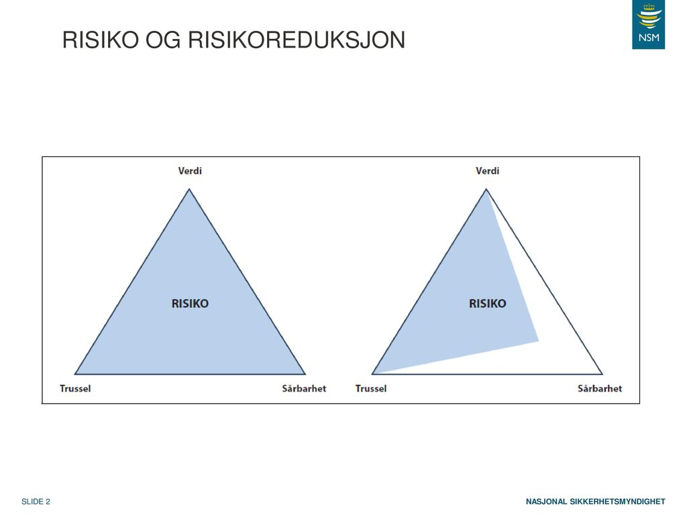

Truslar i det digitale rommet
Digitalisering har vore omfattande dei ti siste åra, verda rundt oss er forandra. Og kvar dag blir verda forandra meir og meir. Vi menneskar kan få ting til å skje. Og i det digitale rommet kan ein møte på truslar og utfordingar. Ressursane vi får frå digitaliseringa gjer oss effektive og produktive. Ulempa ein kan møta på vegen er sårbare truslar, noko som ikkje var eit tema før. Det er ein grunn til at digital tryggleik har blitt så viktig for samfunnet. Digitale tenester har gjort oss som enkeltmenneske og samfunn avhengig. For å kunne fungere treng vi dei.
Digitale verdikjelder har ofte ein start frå byrjinga, eller ein såkalla oppskrift. Når verdiane i hovudsak blir skapte og held til i det digitale rommet, snakkar vi gjerne om digitale verdikjeder. Eit eksempel på digital verdikjelde er korleis telefonsamtalen er sett opp mellom to abonnementar.
Nokon av komplekse og samansette digitale verdikjelder er sårbare. Når det skjer ein feil, kan det gå ut over fleire områdar. Eit døme på dette kan vere fiberbrot. 10. Januar 2017 vart ein sjøkabel som syrgjer for elektronisk kommunikasjon broten. Det førte til at nette rundt låg nede.
Risikotrekanten
Ein kan komme til det digitale sårbare punktet om nokon tar kontroll over ein digital verdi. Ein digital trussel vil seie at nokon kan påverke innanfor det digitale. Dei som gjer dette har evna da til å utnytte vore sårbare punkt. Ein kan bruke riskikotrekant for sjå kor stor angrepet er. I eit digitalt rom er vi utsatt for ulike trusselaktørar.
